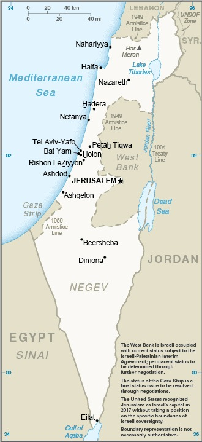

Isreal is a relatively new country with a rich and contentious history.
Declared at an official state in 1948, it has been ripe with tensions and conflicts ever since.
Israel was officially declared a state after Britain withdrew from its mandate of Palestine. At first, the UN proposed dividing the area into Arab and Jewish states. The Arab nations and armies were quickly defeated when disagreed with the new borders.
Since then, Israel has been plagued by wars against its Arab neighbors while simultaneously experiencing rapid population growth.
Amidst the turmoil, Israel is also experiencing internal issues resulting from low labor force participation among minority populations, low workforce productivity, combined with a high cost of housing and goods.
However, Israel is an up-and-coming powerhouse in the field of cutting-edge, high-tech sectors such as technology and natural gas resources.
SOURCE: The CIA World Fact Book
A technologically advanced, free market economy; Israel's leading exports are cut diamonds, pharmaceuticals and high-tech equipment.
Its major imports include crude oil, grains and military equipment.
In 2017 Israel's labor force was marked as 4.021 million ranking at number 93 in comparison to the rest of the world.
Israel has a resident population of 8.7 million people.
The official language of Isael is Hebrew, but there are also regions that speak Arabic and English.

A nighttime view of East Jerusalem. SOURCE: The CIA World Fact Book
The KAHANE CHAI KACH is an organization aimed at expeling Arabs from Israel's biblical lands.
The KAHANE CHAI KACH operate in Israel and West Bank settlements.
Learn more about Israel by visiting its official country site at www.gov.il
SOURCE: The CIA World Fact Book
Return to top